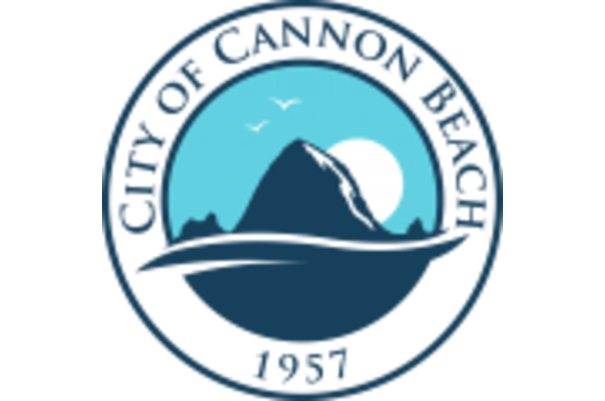

Discover upscale accommodations in a beautiful setting by the Necanicum River at Rivertide Suites in Seaside coast. https://t.co/Gswm0fJaM9
— North Oregon Coast (@NorthOregonCst) August 29, 2016
Cannon Beach, Oregon, is a quaint and laidback town on the coast of Oregon. With a population similar to the number of students at Carroll College, Cannon Beach relies heavily on tourism. Many tourists fly into Portland and take the two hour drive to Cannon Beach. Located in Cannon Beach is Haystack Rock, the main attraction in the town that brings the tourists. Haystack Rock is so significant as it is one of the biggest monoliths in the world, coming in at either third or fourth. For clarification, a monolith is a gigantic single rock or stone. For thousands of years, these rocks have been formed through erosion from the ocean and lava.
